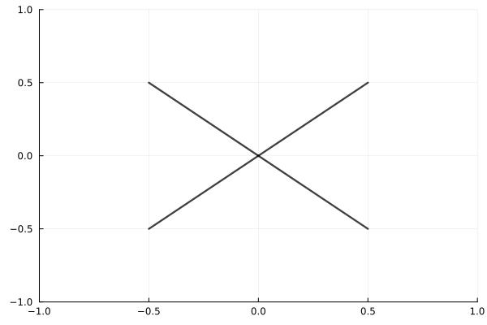

Cross-Tree fractal in cube
The nodes of the grid form the leaves of a cross-form tree fractal. The tree function generates the Nth level leaves of a tree fractal with dim dimensions. It generates new points for the fractal iteratively.
Tree fractal

See Image code
Documentation
GridMethod.findnextleaves — Methodfindnextleaves(i, tree::Tree)Returns the 2^d nodes of tree which branched from the i-th node of the previous tree in the recursive construction. Assumes nodes ordered as given by uptree!.
GridMethod.tree — Methodtree(root::Tree, N)Returns the Nth leaves of a 2^d-branched tree in a d-dimensional space with root root, where N is the number of times the root-tree should be recursively branched into directions dirs.
Keyword arguments:
ratio: The ratio between the length of the recursively branched.dirs: The possible directions in which the next leaves can be generated.
GridMethod.uptree! — Methoduptree!(tree)Returns the next iteration of tree.
Image code
Code used to generate image Tree fractal.
using Plots
using GridMethod
function plot_lines!(P, N, w, dw, c, dc)
w₀, c₀ = w, c
tree = GridMethod.tree()
@gif for _ in 1:N
old_tree = copy(tree)
uptree!(tree)
for (i, p) in old_tree
for q in findnextleaves(i, tree)
pp = [p, q, [NaN, NaN]]
plot!(P, first.(pp), last.(pp), line = (:black, w₀, c₀))
end
end
w₀ += dw
c₀ += dc
end every 1
end
P = plot(1,
legend = false,
color = :black,
xlim = (-1, 1),
ylim = (-1, 1),
);
plot_lines!(P, 7, .5, 2.3, -.4, .75, -.11)
display(P)